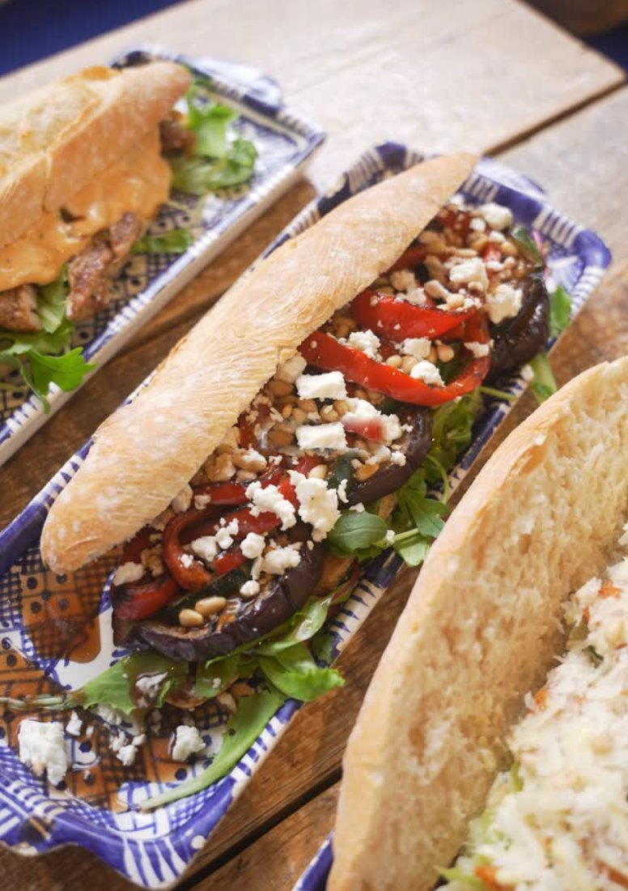
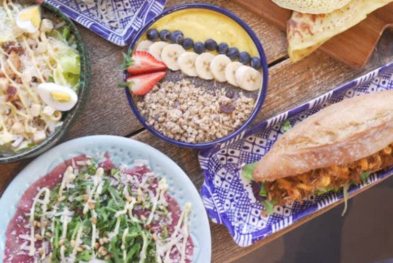

Broodje carpaccio
Carpaccio, rucola, pesto, pijnboompitten en truffelmayo.
€8,95Van shakshuka tot verse broodjes en pancakes. Kom langs op de Hoefkade of bestel om mee te nemen of thuis te laten bezorgen.


Carpaccio, rucola, pesto, pijnboompitten en truffelmayo.
€8,95Aubergine, paprika en feta, zoals gezien op hun Instagram.
Een tafel vol: bowl, broodjes, eitjes en vers sap.
Vegetarisch pannetje met ei, paprika en ui.
€10,95Kipburger, zoete aardappelfriet, cheddar.
€13,95Fris en vol fruit.
€10,95Elke vrijdag couscous, elke dag verse broodjes en altijd een warm welkom.
De vrijdag-couscous komt uit een bericht op hun Instagram.
| Dag | Open |
|---|---|
| Maandag | 09:00 – 19:00 |
| Dinsdag | 09:00 – 19:00 |
| Woensdag | 09:00 – 19:00 |
| Donderdag | 09:00 – 19:00 |
| Vrijdag | 09:00 – 19:00 |
| Zaterdag | 09:00 – 19:00 |
| Zondag | Gesloten |
Zet een QR-code op elke tafel en bij de kassa. Gasten scannen met hun telefoon en zien direct de menukaart, zonder app en zonder papier. Verandert er een prijs? Dan pas je het één keer aan.
Moon’s Kitchen werkt via WhatsApp. Stel hier je bestelling samen en je bericht staat klaar.
Bestelling samenstellen